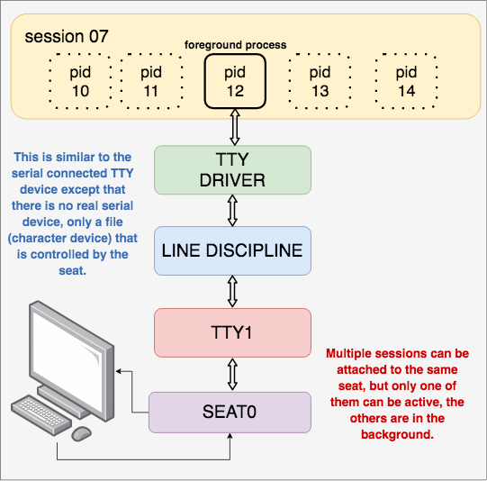
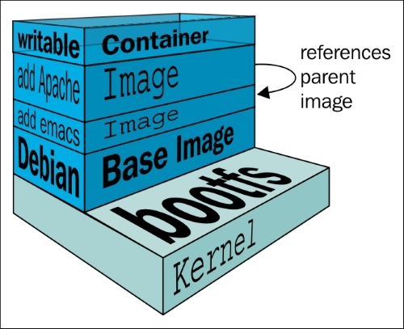

도커 컨테이너를 다루는 명령어
컨테이너 생성
도커 컨테이너 확인
도커 컨테이너의 라이프 사이클을 확인할 수 있습니다.
상태 | 설명 |
|---|---|
created | 시작된 적이 없는 컨테이너입니다. |
running | docker start 또는 docker run에 의해 시작된 실행 중인 컨테이너입니다. |
paused | 일시 중단된 컨테이너입니다. docker pause를 참조하세요. |
restarting | 해당 컨테이너에 대한 지정된 다시 시작 정책으로 인해 시작 중인 컨테이너입니다. |
exited | 더 이상 실행 중이 아닌 컨테이너입니다. 예를 들어, 컨테이너 내부의 프로세스가 완료되었거나 docker stop 명령을 통해 중지된 경우입니다. |
removing | 제거 중인 컨테이너입니다. docker rm을 참조하세요. |
dead | "죽은(dead)" 컨테이너입니다. 예를 들어, 외부 프로세스에 의해 리소스가 사용 중이어서 부분적으로만 제거된 컨테이너입니다. 죽은 컨테이너는 다시 시작되지 않으며, 삭제만 가능합니다. |
도커의 컨테이너는 어떤 프로그램을 실행하는 컨테이너입니다.
각각의 컨테이너는 이 컨테이너를 만드는 이미지에 그 컨테이너에서 실행될 명령이 무엇인지 적어놓은게 COMMAND입니다.
도커 컨테이너는 독립된 환경을 제공하지만, 프로그램이 실행되려면 해당환경에서 리눅스 커널에 자원을 요청하여 실행이되어야합니다.
컨테이너 내부에서 프로그램을 실행하려면 커맨드 또는 프로세스를 통해서 이러한 요청을 전달해야합니다.
COMMAND항목은 이러한 명령어 또는 프로세스를 나타내며, 컨테이너가 시작될 때 실행되어야하는 프로그램을 지정하는데 사용됩니다.
ubuntu 의 경우 bash 쉘의 프로그램이 실행되며, 이를 COMMAND 항목에서 확인할 수 있습니다.
(실제 실행 파일은 리눅스 시스템에서 \bin\bash 프로그램을 실행하기 때문에 \bin\bash로 표시됩니다.)
컨테이너 삭제
중지 상태인 도커 컨테이너 삭제하기
또는
컨테이너 실행
도커는 어떤 시스템을 실행하는 게 아니라 시스템 상에서 실행되는 프로그램을 실행하기 때문에 도커에서 실행하려는 프로그램이 종료가되면 도커 자체도 컨테이너도 종료하게 됩니다.
배쉬 셀은 표준 입력(STDIN )을 받을 수 있는 상태가 되면 대기 상태로 유지되지만, 표준 입력을 받을 수 없는 상태가 되면 종료하게 되어있습니다.
참고
리눅스에서는 프로그램이 실행되면 세가지의 스트림이 오픈됩니다.
프로그램에 입력을 넣을 수 있는 방법
프로그램이 출력할 때 그 출력을 어딘가에 출력할지
에러가 발생하면 그 출력을 어디에 할지 설정이 됩니다.
만약 터미널 프로그램을 실행한다면
터미널 프로그램에 입력을 넣을 수 있는 방법
터미널이 동작하고 결과를 출력할 위치를 지정하는 방법
터미널 프로그램이 동작하다가 예외가 발생하면 어디에 출력할지
터미널에서 /bin/bash를 통해서 우분투가 실행이 되는데 터미널에서 상속받은 입력 스트림에 입력을 할수 없는 상태가 되니 bash쉘이 종료가 되고 우분투를 실행하는 bash가 종료가 되니까 우분투가 같이 종료가 되는 겁니다.
docker run 명령
이 명령어는 입력한 이미지를 없을 경우 저장하고, 컨테이너를 생성후 실행하는 명령어입니다.
옵션 | 설명 |
|---|---|
-i | 컨테이너 입력(STDIN)을 열어놓는 옵션 (-t 함께사용 ) |
-t | 가상 터미널(tty)을 할당하는 옵션 |
--name | 컨테이너 이름을 설정하는 옵션 |
-d | 컨테이너를 백그라운드에서 실행하는 옵션 |
--rm | 컨테이너 종료시 컨테이너를 자동으로 삭제하는 옵션 |
-p | 호스트와 컨테이너 포트를 연결하는 옵션 |
-v | 호스트와 컨테이너 디렉토리를 연결하는 옵션 |
참고
-it 옵션의 의미
docker 컨테이너에 표준 입력을 오픈하고.(-i 옵션)
pseudo tty 를 만들어서 (-t 옵션)해당 표준 입력을 pseudo tty에 연결해놓음
따라서, 키보드 입력을 pseudo tty 를 통해, 컨테이너의 표준 입력으로 전달할 수 있도록 하는 것
pseudo tty
tty는 teletypewriter의 약자로,리눅스( 유닉스 계열)에서는 콘솔 또는 터미널을 의미함
tty를 통해 리눅스에 키보드 입력을 전달할 수 있으며,하나의 tty 의외에 다양한 터미널에 접속을 지원하기 위해 두번째 tty부터는 가상(pseudo)이라는 말을 붙여서,pseudo tty라고 이야기합니다.

tty를 통해서 리눅스에 키보드 입력을 전달할 수 있는데, 컨테이너 환경에서는 다양한 컨테이너에 키보드 입력을 전달하기 위해서 가상화 tty를 지원하다고 생각하면 됩니다.
매우 중요
기본적으로 /bin/bash는 표준 입력 스트림을 받을 수 없는 상태인 경우 종료가 되기 때문에 /bin/bash로 실행하는 컨테이너는 별도의 표준 입력 스트림을 열어서 bash쉘을 대기 상태로 유지해야합니다.
그리고 컨테이너가 종료(stop )일 경우 해당 컨테이너를 자동으로 삭제해주는 옵션도 추가할 수 있습니다.
컨테이너 종료하기
컨테이너 일시정지하기
포트포워딩
외부에서 해당 웹서버에 접속할 수 있는 방법이 없습니다.
포트 포워딩이 필요합니다.
docker를 실행한 PC를 호스트 PC라고 하는데
도커 엔진에서 도커 컨테이너끼리 통신을 하기 위한
private IP가 할당됩니다.docekr inspect network bridge로 확인할 수 있습니다.호스트 PC IP에 특정 port로 접속하면, 해당 port를 docker 컨테이너의 특정 Private IP의 특정 포트로 변환해주는데 이를
NAPT(Network Address Port Traslation)기술이라고 합니다.이를 지원해주는 옵션이
-p입니다.따라서
-p 80:80옵션을 추가하면 외부 ip에서80포트로 접근시 컨테이너의 내부 ip의 80 포트랑 포워딩을 해준다는 의미입니다.내부 IP:80 포트에 프로세스가 실행중이여야합니다.
볼륨 마운트 (중요)
기본적인 / 패스에 접속시 아파치 웹서버는 /usr/local/apache2/htdocs 폴더에 있는 index.html을 전달합니다.
따라서 해당 폴더를 내가 원하는
index.html파일로 교체하면 해당 html 파일을 받을 수 있습니다.도커의 기본 동작 방식 중 하나로, 컨테이너는 독립적인 실행 단위로 간주되며 삭제되면 해당 컨테이너와 관련된 데이터도 함께 삭제됩니다.
데이터를 영구적을 보존하거나 컨테이너가 재시작 되어도 데이터나 설정을 유지할 때 사용하는 방법입니다.
-v 옵션으로 호스트 PC 파일 절대 경로 : 아파치 기본 경로로 마운팅할 수 있으며 아래 명령어로 마운트 결과를 확인할 수 있습니다.
경량화(alpine)
도커 이미지는 여러개의 이미지가 계층(layer)으로 쌓인 형태로 작성됩니다.

기본적인 리눅스 커널 계층위에 스크립트로 작성된 기본적인 프로그램이 설치되는 방식입니다.
알파인이라는 경량화된 컨테이너는 해당 컨테이너 프로그램(apache )만 실행되기 위해 최소한의 패키지만 설치된 버전입니다.
bash shell은 용량이 크기 때문에 sh shell이 설치되어 있습니다.
그래서 -it 명령어로 접근할때 /bin/bash로 쉘 명령어를 실행할 수 없고 /bin/sh로 쉘을 실행할 수 있습니다.
연결과 신규명령
exec - 신규 명령을 실행
attach - 컨테이너에 연결
컨테이너에 접속한 상태에서 exit 명령어를 입력하면 해당 컨테이너 프로그램을 실행중인 프로세스가 종료됩니다.